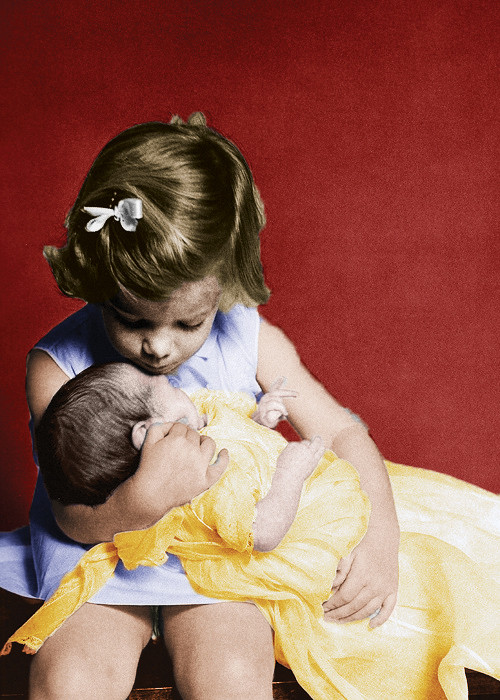

Photo Restoration
One of my side projects is photo restoration. I do everything from simple fixes to salvaging old photos to recolouring.
You can find samples of my work below

 beforeafter
beforeafter
beforeafter

beforeafter